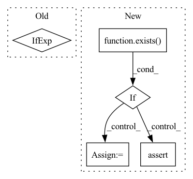

Pattern ID :35600

Before Change
nn.Linear(
in_features=context_time_features, out_features=out_channels * 2
),
)
if exists(context_time_features)
else None
)
self.block1 = ConvBlock1d(
After Change
) -> None:
super().__init__()
self.use_mapping = exists(context_mapping_features)
self.use_embedding = exists(context_embedding_features)
self.block1 = ConvBlock1d(
in_channels=in_channels,
out_channels=out_channels,
num_groups=num_groups,
dilation=dilation,
)
if self.use_mapping:
assert exists(context_mapping_features)
self.to_scale_shift = MappingToScaleShift(
features=context_mapping_features, channels=out_channels
)
In pattern: SUPERPATTERN
Frequency: 3
Non-data size: 5
Instances
Fragment ID: 101500788
Project Name: archinetai/audio-diffusion-pytorch
Commit Name: 3c710edf168da06dcc89c23ef12023d0f8b63043
Time: 2022-09-21
Author: flavio.schneider.97@gmail.com
File Name: audio_diffusion_pytorch/modules.py
M Class Name: ResnetBlock1d
N Class Name: ResnetBlock1d
M Method Name: __init__(0)
N Method Name: __init__(0)
M Parent Class: nn.Module
N Parent Class: nn.Module
M File Name: audio_diffusion_pytorch/modules.py
N File Name: audio_diffusion_pytorch/modules.py
M Start Line: 167
M End Line: 176
N Start Line: 147
N End Line: 163
'>
Before Change
self.channels = channels
self.self_condition = self_condition
input_channels = channels * (2 if self_condition else 1)
init_dim = default(init_dim, dim)
self.init_conv = nn.Conv2d(input_channels, init_dim, 7, padding = 3)
After Change
// for initial dwt transform (or whatever transform researcher wants to try here)
if exists(init_img_transform) and exists(final_img_itransform):
init_shape = torch.Size(1, 1, 32, 32)
mock_tensor = torch.randn(init_shape)
assert final_img_itransform(init_img_transform(mock_tensor)).shape == init_shape
self.init_img_transform = default(init_img_transform, identity)
self.final_img_itransform = default(final_img_itransform, identity)
'>
Fragment ID: 101500789
Project Name: lucidrains/denoising-diffusion-pytorch
Commit Name: 1ca516ad6487b8356a6fffbe5b307f74df76d1d1
Time: 2023-01-31
Author: lucidrains@gmail.com
File Name: denoising_diffusion_pytorch/simple_diffusion.py
M Class Name: UViT
N Class Name: UViT
M Method Name: __init__(17)
N Method Name: __init__(15)
M Parent Class: nn.Module
N Parent Class: nn.Module
M File Name: denoising_diffusion_pytorch/simple_diffusion.py
N File Name: denoising_diffusion_pytorch/simple_diffusion.py
M Start Line: 293
M End Line: 366
N Start Line: 302
N End Line: 391
'>
Before Change
ConvOut1d(
channels=out_channels,
kernel_sizes=kernel_sizes_out,
)
if exists(kernel_sizes_out)
else nn.Identity(),
)
def get_channels(
After Change
self.use_context_time = use_context_time
self.use_context_features = use_context_features
self.use_context_channels = use_context_channels
self.use_post_out_block = exists(kernel_sizes_out)
context_channels_pad_length = num_layers + 1 - len(context_channels)
context_channels = context_channels + [0] * context_channels_pad_length
self.context_channels = context_channels
if use_context_channels:
has_context = [c > 0 for c in context_channels]
self.has_context = has_context
self.channels_ids = [sum(has_context[:i]) for i in range(len(has_context))]
assert (
len(factors) == num_layers
and len(attentions) == num_layers
and len(num_blocks) == num_layers
)
self.to_in = nn.Sequential(
Rearrange("b c (l p) -> b (c p) l", p=patch_size),
CrossEmbed1d(
in_channels=(in_channels + context_channels[0]) * patch_size,
out_channels=channels,
kernel_sizes=kernel_sizes_init,
stride=1,
),
)
if use_context_time or use_context_features:
context_mapping_features = channels * 4
self.to_mapping = nn.Sequential(
nn.Linear(context_mapping_features, context_mapping_features),
nn.GELU(),
nn.Linear(context_mapping_features, context_mapping_features),
nn.GELU(),
)
if use_context_time:
assert exists(context_mapping_features)
self.to_time = nn.Sequential(
TimePositionalEmbedding(
dim=channels, out_features=context_mapping_features
),
nn.GELU(),
)
if use_context_features:
assert exists(context_features) and exists(context_mapping_features)
self.to_features = nn.Sequential(
nn.Linear(
in_features=context_features, out_features=context_mapping_features
),
nn.GELU(),
)
self.downsamples = nn.ModuleList(
[
DownsampleBlock1d(
in_channels=channels * multipliers[i],
out_channels=channels * multipliers[i + 1],
context_mapping_features=context_mapping_features,
context_channels=context_channels[i + 1],
context_embedding_features=context_embedding_features,
num_layers=num_blocks[i],
factor=factors[i],
kernel_multiplier=kernel_multiplier_downsample,
num_groups=resnet_groups,
use_pre_downsample=True,
use_skip=True,
use_attention=attentions[i],
attention_heads=attention_heads,
attention_features=attention_features,
attention_multiplier=attention_multiplier,
)
for i in range(num_layers)
]
)
self.bottleneck = BottleneckBlock1d(
channels=channels * multipliers[-1],
context_mapping_features=context_mapping_features,
context_embedding_features=context_embedding_features,
num_groups=resnet_groups,
use_attention=use_attention_bottleneck,
attention_heads=attention_heads,
attention_features=attention_features,
)
self.upsamples = nn.ModuleList(
[
UpsampleBlock1d(
in_channels=channels * multipliers[i + 1],
out_channels=channels * multipliers[i],
context_mapping_features=context_mapping_features,
context_embedding_features=context_embedding_features,
num_layers=num_blocks[i] + (1 if attentions[i] else 0),
factor=factors[i],
use_nearest=use_nearest_upsample,
num_groups=resnet_groups,
use_skip_scale=use_skip_scale,
use_pre_upsample=False,
use_skip=True,
skip_channels=channels * multipliers[i + 1],
use_attention=attentions[i],
attention_heads=attention_heads,
attention_features=attention_features,
attention_multiplier=attention_multiplier,
)
for i in reversed(range(num_layers))
]
)
self.to_pre_out = ResnetBlock1d(
in_channels=channels,
out_channels=channels,
num_groups=resnet_groups,
context_mapping_features=context_mapping_features,
)
self.to_out = nn.Sequential(
Conv1d(
in_channels=channels,
out_channels=out_channels * patch_size,
kernel_size=1,
),
Rearrange("b (c p) l -> b c (l p)", p=patch_size),
)
if self.use_post_out_block:
assert exists(kernel_sizes_out)
self.to_post_out = ConvOut1d(
channels=out_channels,
kernel_sizes=kernel_sizes_out,
)
'>
Fragment ID: 101500790
Project Name: archinetai/audio-diffusion-pytorch
Commit Name: 3c710edf168da06dcc89c23ef12023d0f8b63043
Time: 2022-09-21
Author: flavio.schneider.97@gmail.com
File Name: audio_diffusion_pytorch/modules.py
M Class Name: UNet1d
N Class Name: UNet1d
M Method Name: __init__(23)
N Method Name: __init__(21)
M Parent Class: nn.Module
N Parent Class: nn.Module
M File Name: audio_diffusion_pytorch/modules.py
N File Name: audio_diffusion_pytorch/modules.py
M Start Line: 823
M End Line: 938
N Start Line: 842
N End Line: 997